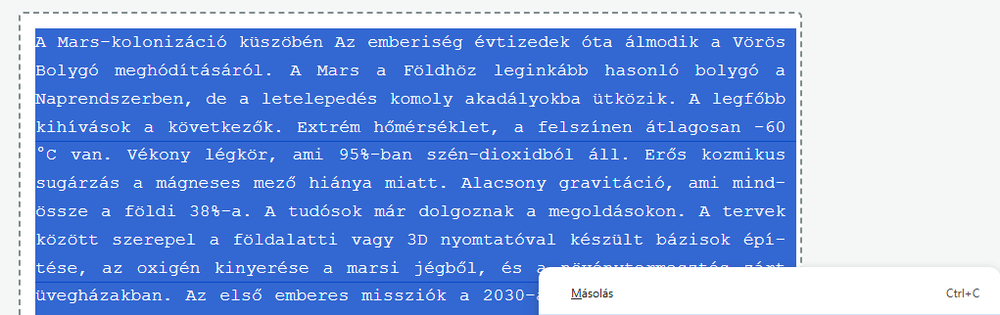
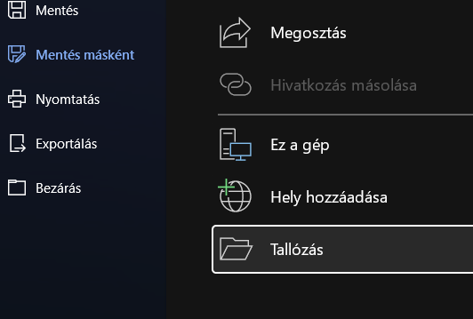

A K-pop világa
Mi is az a K-pop?
A K-pop, vagyis a koreai popzene egy Dél-Koreából származó zenei műfaj, amely az elmúlt évtizedben letarolta a világot. Nem csupán zene, hanem egy teljes audiovizuális élmény, amely ötvözi a fülbemászó dallamokat, a lenyűgöző koreográfiákat és a magas szintű divatot. A K-pop előadók (idolok) éveken át tartó, szigorú képzésen vesznek részt, mielőtt debütálnának a színpadon.
A K-pop legfőbb jellemzői
A dalok gyakran keverik a pop, hip-hop, R&B és elektronikus zene elemeit. Látványos és tökéletesen szinkronizált tánckoreográfiák kísérik a fellépéseket. A rajongói kultúra (fandomok) rendkívül erős és elkötelezett. A zenei videók (MV-k) hatalmas költségvetésből, mozifilmes minőségben készülnek.
Generációk és legendák
A K-pop történetét generációkra szokás bontani. Az első generáció fektette le az alapokat a 90-es években, míg a második generáció (mint a BIGBANG vagy a Girls' Generation) tette nemzetközileg is ismertté a műfajt. A harmadik és negyedik generáció csapatai már globális szupersztárok, akik a Billboard listákat is meghódítják, és stadionokat töltenek meg világszerte.
Néhány ikonikus K-pop csapat
Csapat - Alapítás - Ügynökség
BTS - 2013 - Big Hit Music
BLACKPINK - 2016 - YG Entertainment
Stray Kids - 2018 - JYP Entertainment
NewJeans - 2022 - ADOR
A globális hatás
Ma már a K-pop nemcsak zene, hanem Dél-Korea egyik legnagyobb kulturális exportcikke. A divattól kezdve a kozmetikumokon át a nyelvtanulásig mindent befolyásol. Az idolok globális márkák nagykövetei, és milliókat inspirálnak arra, hogy megismerjék a koreai kultúrát és nyelvet.
Másold le a fenti szöveget, majd nyisd meg a Wordöt, és illeszd be egy új üres dokumentumba! Mentsd el, lehetőleg a saját meghajtódon az aktuális évfolyamod mappájába! A fájlnév legyen A K-pop világa saját neved.docx


Állítsd be a dokumentum margóit: a bal margó legyen 2,5 cm, a többi (jobb, alsó, felső) pedig 2 cm.Kapcsold be az egész dokumentumban az automatikus elválasztást! Állíts be a lapnak egy egyszerű, vékony oldalszegélyt (Körbe)!
Módosítsd a beépített stílusokat a következők szerint, majd alkalmazd őket a szövegen:
Keresd meg a K-pop legfőbb jellemzői alatti 4 mondatot! Tedd őket külön bekezdésbe (Enter-rel), majd alakítsd őket felsorolássá! Válassz egy egyedi felsorolásjelet (pl. pipát vagy csillagot)! A felsorolásnál a sorközt állítsd 1,5-szeresre!
Keresd meg a Néhány ikonikus K-pop csapat alatti 5 sort (a "Csapat - Alapítás - Ügynökség" résztől a NewJeans-ig)! Alakítsd ezt a részt táblázattá a Word beépített funkciójával: a szöveg kijelölése, majd Beszúrás fül → Táblázat → Szövegből táblázat! A cellahatároló a kötőjel legyen! Így 3 oszlopod lesz; formázd meg ezeket egy tetszőleges beépített, színes táblázatstílussal!
Keress az interneten két képet K-pop csapatokról vagy idolokról, és szúrd be őket a dokumentumba! Figyelj arra, hogy
Nyisd meg az Élőfejet! Az első oldal kivételével (Első oldal eltérő jelölőnégyzet beállítása) minden oldal élőfejébe írd be középre igazítva: Dél-Korea zenei exportja.
Az Élőlábba minden oldalon, középre igazítva jelenjen meg az oldalszám!
Szúrj be egy oldaltörést (ctrl + Enter) a dokumentum legelejére, hogy a szöveg csak a második oldalon kezdődjön! Az így kapott üres oldalra szúrj be egy automatikus tartalomjegyzéket!
Mentsd el a munkádat még egyszer (ctrl + s), nyisd meg a Fájlkezelőt, majd add be a Dolgozatok meghajtóra!